Antes de qualquer coisa, vamos dar uma lida sobre o conteúdo dessa aula no seguinte PDF:
Para as experiências práticas, usaremos o seguinte código:
Elementos block-level, inline e Seletores Personalizados
Agrupamento de elementos
Os elementos <div> e <span> são usados para agrupar e estruturar um documento e são frequentemente usados em conjunto com os atributos class e id.
Elementos Block-level
O elemento <div> é um elemento block-level. Tem a função de agrupar elementos html, definindo blocos de contéudo sempre iniciando uma nova linha e ocupando toda a linha.
Exemplo:
Bloco 1
Bloco 2
Elementos Inline
O elemento <span> é um elemento inline. É um elemento neutro embutidos que marcam um bloco dentro de uma mesma linha ou parágrafo. Pode ser usado pelo CSS para estilização de partes específicas do conteúdo do documento HTM
Seletores Personalizados
Possibilita personalizar tags do documento HTML para estilização. Temos os seletores do tipo classe e o seletor do tipo id
Seletor do tipo id
O seletor de id usa o atributo id de um elemento HTML para selecionar um elemento específico. Cada id é única. O seletor de id é representado por “#”.
Seletor do tipo classe
O seletor de classe seleciona elementos HTML com um atributo de classe específico.O seletor de classe é representado por um ponto, “.”, e tem como alvo elementos com um determinado valor para seu atributo class. Para casos em que haja necessidade de mais de um elemento com a mesma identificação usamos o atributo class.
Pseudo-Classes
Usada para definir um estado especial de um elemento. O seletor de classe é representado por dois pontos, “:”. Estão relacionados a um elemento ou uma classe.
Pseudo-Elementos
Usado para estilizar partes específicas de um elemento.O seletor de classe é representado por dois pontos seguido de dois pontos, “::”
Os elementos <div> e <span> são usados para agrupar e estruturar um documento e são frequentemente usados em conjunto com os atributos class e id, que veremos adiante.
O elemento <div> é um elemento block-level. Tem a função de agrupar elementos html, definindo blocos de contéudo sempre iniciando uma nova linha e ocupando toda a linha.
Agora, vamos envelopar, no nosso Visual Studio Code, os dois blocos citados através do seguinte comando:
O nosso código ficará assim:
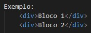Mas, observe o resulto na prática, e perceba que a divisão em blocos foi realizada:
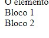A mudança é perceptível, mas não tão clara assim. Por que não há nenhuma diferenciação, cores ou estilo de formatação, de onde será o bloco. Então, para demonstrar e diferenciá-los, vamos utilizar o CSS
Iniclamente, vamos definir uma cor roxa para essas div's. Ficara da seguinte forma:
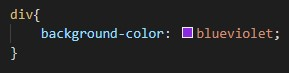Na prática:
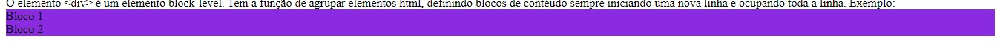Qual o efeito gerado? Parece que as div's foram unidas e viraram uma só (na prática, isso não é verdade).
Os dois são elementos diferentes, mas que parecem como se fosse um mesmo. Isso se deve, porquê eles ainda não receberam diferenciações.
Mas, uma possibilidade para separá-los, é utilizar-se da propriedade margin, que, para fins de exemplificação, defeniremos como 10 pixels. Essa propriedade vai definir a distância entre as margens do elemento, no caso, do nosso bloco, até as margens do elemento pai, no caso, da tag <body>, da seguinte forma:
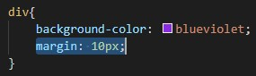E observe como ficou agora:
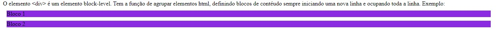Agora, vamos envelopar cada parte desse nosso código de exemplo:
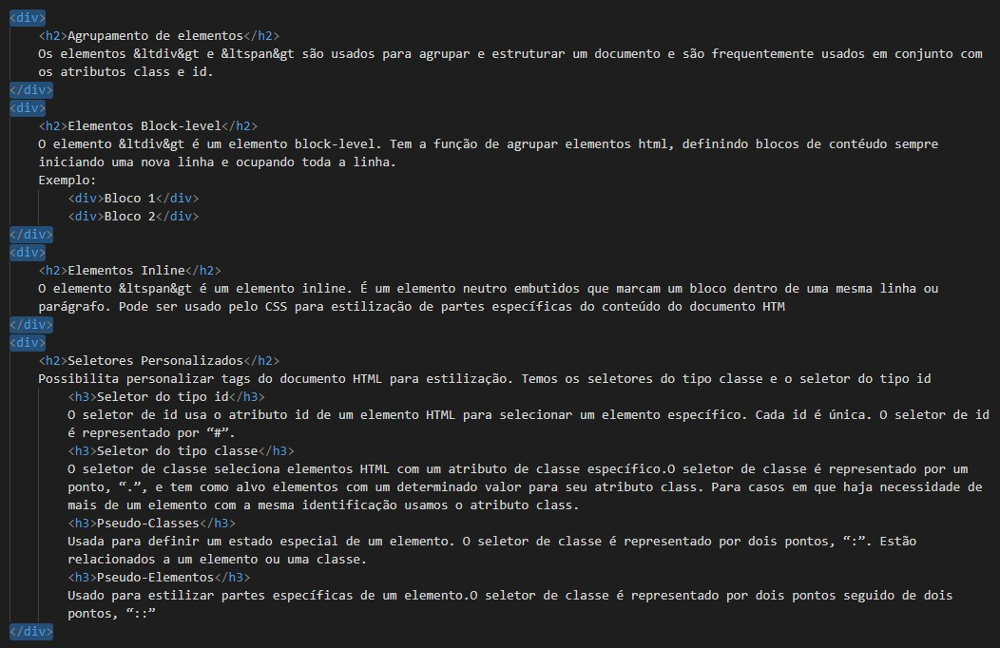Observe como ficou o nosso arquivo HTML:
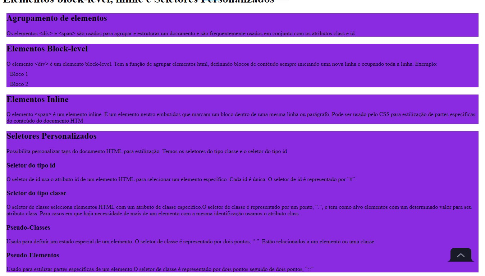O elemento <span> é um elemento inline. É um elemento neutro embutidos que marcam um bloco dentro de uma mesma linha ou parágrafo. Pode ser usado pelo CSS para estilização de partes específicas do conteúdo do documento HTML
No nosso código, encontre o subtítulo "Elementos Inline", selecione o trecho "elemento neutro" e envelope com a tag <span>:
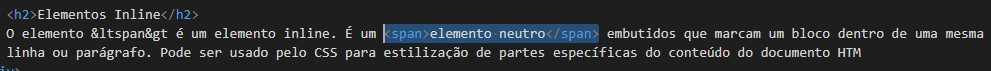Observe que na prática não acontece absolutamente nada:
+ 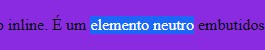Essa tag é muito útil quando se deseja realizar a formatação ou a estilização de uma palavra ou de trechos mais específicos.
Agora vamos ao CSS, e vamos definir que esse trecho de <span> será negritado. Para isso, utilizaremos a propriedade font-weight (peso da fonte) com o valor bold:
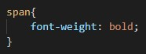Agora perceba:
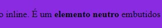Quando criamos e estilizamos a nossa tag <div>, definimos que todas as <div> seriam roxas e com margem de 10 pixels, sem exceções. Mas, existe a possibilidade de formatarmos cada <div> com uma estilização diferente, seja ela para alterar a fonte, a cor da fonte, o tamanho ou demais propriedades. Para isso, usaremos os seletores personalizados.
Assim, os seletores personalizados possibilitam personalizar tags do documento HTML para estilização. Temos os seletores do tipo classe e o seletor do tipo id
ÚLTIMA MODIFICAÇÃO: 25 de outubro de 2021 às 10:58, Horário de Brasília - Brasil, por Gabriel Emanuel.